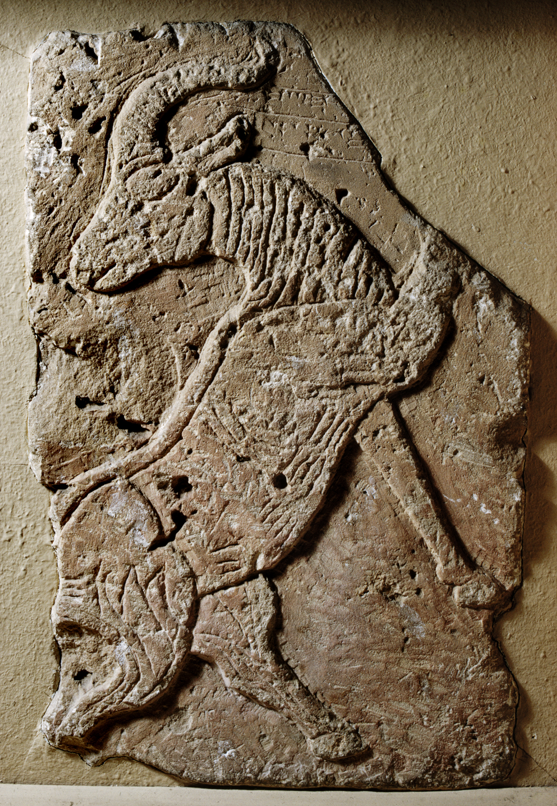

Tell Halaf Orthostat Reliefs

- Find Name
- Tell Halaf Orthostat Reliefs
- Description
- Basalt and limestone slabs carved in low relief that decorated the palace of the Aramean prince Kapara at Guzana (Tell Halaf, in northeast Syria), made in the late 10th to early 9th century BC. Excavated by Max von Oppenheim in 1899, 1911-13, and 1929, the 194 orthostats show hunting scenes, fantastic creatures, banquets, and deities, many bearing Kapara's inscription, 'Palace of Kapara, son of Khadianu.' Oppenheim's private Tell Halaf Museum in Berlin was bombed in November 1943; the limestone pieces were destroyed and the basalt shattered into more than 27,000 fragments, which were painstakingly restored at the Pergamon Museum between 2001 and 2010. Other reliefs are in the Metropolitan Museum of Art, the Walters Art Museum, and the National Museum of Aleppo.
- Historical Period
- Iron Age II
- Evidence Class
- Contextual
- Interpretations
- The reliefs show the Aramean city-state world that surrounded Israel in the divided monarchy - the small kingdoms between Assyria and the Mediterranean that the Bible names as Aram, and that Assyria gradually absorbed. Guzana is the Gozan of 2 Kings 17:6 and 18:11, where Assyria settled Israelite exiles after the fall of Samaria, so the site connects the art of an Aramean palace to the exile's destination. The reliefs themselves do not depict any biblical event; their value is the world they reconstruct.
- Alternative Names
- Guzana Orthostats; Kapara Palace Reliefs
- Related Books
- Related Events
- Scripture Illuminated
- Biblical Significance
- They bring to life Guzana - biblical Gozan - the distant city where Israel's exiles were settled, and the Aramean culture that flourished beside Israel before Assyria swallowed it.
- Artifact Date
- late 10th-early 9th century BC
- Current Location
- Pergamon Museum (Vorderasiatisches Museum), Berlin; Metropolitan Museum of Art, New York; Walters Art Museum, Baltimore; National Museum of Aleppo
- Date Discovered
- 1899 (first visit); 1911-1913 (main excavation)
- Discovery Location
- Tell Halaf, Syria (ancient Guzana)
- Timeline Era
- Divided Monarchy
Awaiting Review Not yet checked against scholarly sources. Treat its claims as provisional until this entry is reviewed. About verification
Last reviewed: not yet reviewed